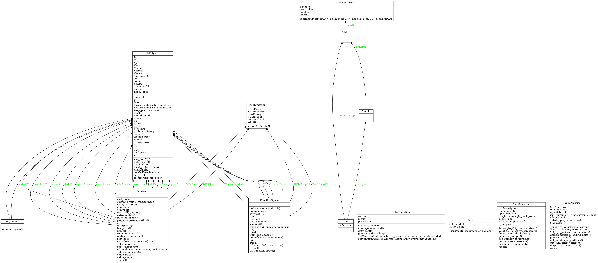

Numerical Geolab’s documentation¶
About¶
Numerical Geolab codes and algorithms serve as a basic ingredient for the numerical developments of the CoQuake project.
CoQuake project receives funding from the European Research Council (ERC) under the European Union’s Horizon 2020 research and innovation programme (grant agreement No 757848 “Controlling earthQuakes”).
For more details visit: CoQuake Project
Contact: Ioannis Stefanou
The Finite Element module builts on : FEniCS project (open-source, under LGPLv3).
Todo
Machine Learning (in progress…)
Discrete Elements
Large displacements/deformations (at the moment use of the ALE module available in FEniCS)
Contact/Interfaces
Improve accuracy of diffusion in unit-tests (use of a centered finite difference algorithm for the time discretization)
Project structure¶
{kind=link}
Project modules¶
Indices and tables¶
Numerical Geolab ReadMe¶
Numerical Geolab Theory¶
Numerical Geolab Tutorials¶
- 1. Simple shear of a 2D Cacuhy layer with Von-Mises elastoplastic strain hardening material
- 2. Simple shear of a 2D Cacuhy layer with Von-Mises yield criterion and Perzyna viscoplasticity
- 3. Simple shear of a 1D Cosserat layer with Drucker-Prager elastoplastic material
- 4. Simple shear of a 1D Cosserat layer with Drucker-Prager elastoplastic material
- 5. Application of Thermo- Hydro- Mechanical (THM) couplings in Numerical Geolab
- 6. Cosserat THM couplings: Thermo-hydro plasticity application - Drucker-Prager yield criterion
- 7. Simple shear of a 1D Cosserat layer with Breakage Mechanics material
- 8. Usage of custom material